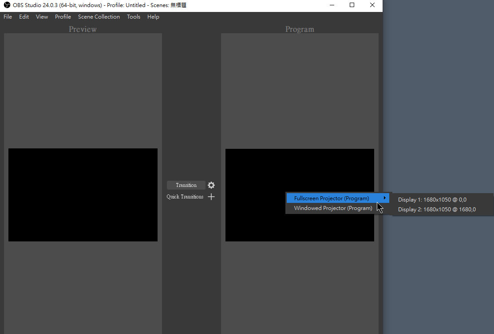
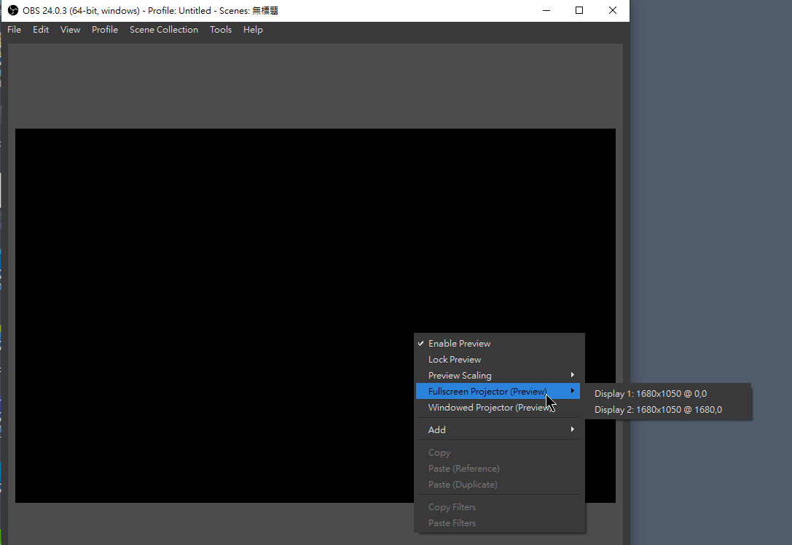

如何將 OBS 的畫面送到 ZOOM.US 軟體中?
ZOOM 是一套很好用的線上開會工具，透過月租的服務，可享用一場 100 人可以同時間線上開會，這也是我每周三主持 Angular 線上讀書會的主要工具
有人問我說，能不能將 OBS 的直播畫面輸出給 ZOOM 使用，因為他想要利用 OBS 的畫面編排功能及背景去背，讓自己的視訊畫面能和桌面融為一體，所以才有這篇文章的產生
作法更新
(2020/03/09 更新) 跟下面的概念是一樣的，OBS 本身有提供 Fullscreen Projector(preview) 的功能，當然這做法需要多顆螢幕，但延遲會相對的少很多，僅供參考。怎麼使用 Fullscreen Projector 呢，在預覽視窗上按滑鼠右鍵叫出選單，即可看到此選項，這時候就選擇要投影的螢幕是哪一個。而 Zoom 的部分就分享桌面即可


前言
在這之前，要先介紹 NewTek 這間公司所提出的新技術 NDI，這一門黑科技讓直播能做的事情到達另外一個不可思議的境界，以往在攝影機與主控台間需要透過拉 SDI 的線來傳遞訊號，而 SDI 的線材又很貴。這還不含器材的部分，總之做一場直播是很貴的
- 不使用 HDMI 的原因是 HDMI 的線材在一定長度後，訊後會衰減，並不適合大場地使用
NDI 這技術可以讓我們使用網路線來做到 SDI 的效果，且延遲是非常低的。NewTek 也好心地將這個技術免費釋出，讓其他硬體/軟體廠商可以將這個協定實作在自家的產品上，這裡有幾個比較有名的
這裡我們就用免費的 OBS 來做示範
環境設定
- 安裝 OBS
- 安裝 OBS-NDI
- 會要求安裝 NDI 3.0 Runtime
- 安裝 NewTek Tools ，只需要安裝 portable 版本即可，我們只需要 NDI Studio Monitor
當安裝完以上的東西後，應該會被要求重啟電腦。電腦重新啟動後，就可以打開 OBS 的程式
- 在 Tools 的地方，點選 NDI Output settings

- 勾選 【Enable NDI Output】

-
這樣 OBS 就會將你的訊號，用 NDI 的模式發送出去，只要在你的區域網域內，支援 NDI Input 的軟體或導播機，都可以搜尋的到
-
開啟【NewTek NDI Studio Montiro】

-
選擇訊號來源

-
檢視 OBS NDI 訊號輸出結果

-
由於我們要將這一個視窗透過 ZOOM 分享的方式，顯示給其他與會者看。所以還有兩個地方要做調整
-
視窗的 border 要隱藏

-
聲音音量的顯示，要將 VU Meter 關掉

-
-
完成設定，剩下的就是用 Zoom 分享這一個視窗應用程式
這裡要注意一點，當你點選 Hide Window 時，該視窗就無法再移動了，所以如果有第二顆螢幕或是第二台電腦時，這一個分享的動作，可以在另外一個地方進行。